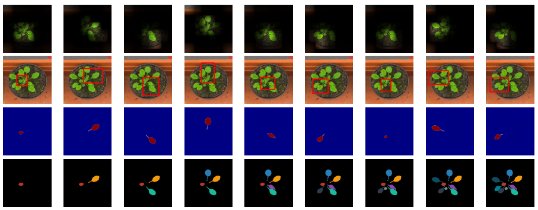

Mengye Ren1, Richard S. Zemel1,2
1Department of Computer Science, University of Toronto, Toronto ON, CANADA
2Canadian Institute for Advanced Research, Toronto ON, CANADA

While convolutional neural networks have gained impressive success recently in solving structured prediction problems such as semantic segmentation, it remains a challenge to differentiate individual object instances in the scene. Instance segmentation is very important in a variety of applications, such as autonomous driving, image captioning, and visual question answering. Techniques that combine large graphical models with low-level vision have been proposed to address this problem; however, we propose an end-to-end recurrent neural network (RNN) architecture with an attention mechanism to model a human-like counting process, and produce detailed instance segmentations. The network is jointly trained to sequentially produce regions of interest as well as a dominant object segmentation within each region. The proposed model achieves competitive results on the CVPPP, KITTI, and Cityscapes datasets.
[pdf]
[pdf]
[link]
@inproceedings{ren17recattend,
author = {Mengye Ren and Richard S. Zemel},
title = {End-to-End Instance Segmentation with Recurrent Attention},
booktitle = {CVPR},
year = {2017}
}